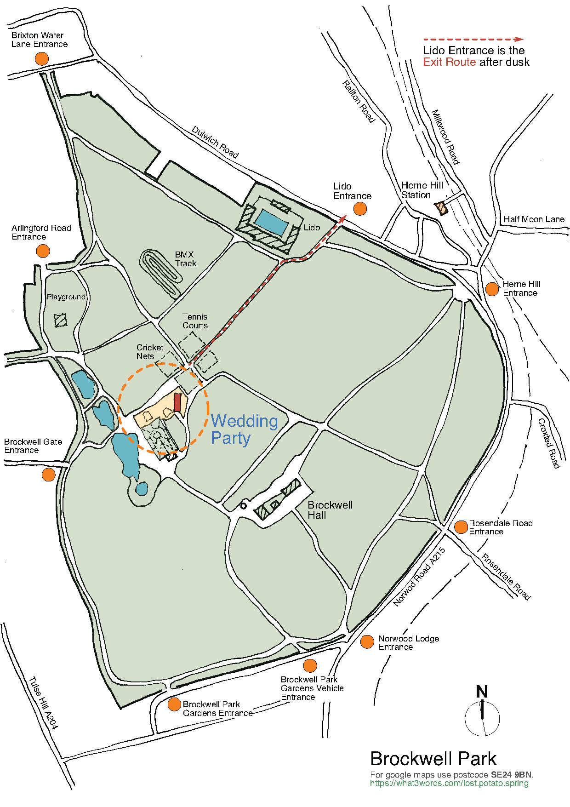

Venue
We are fortunate enough to have access to the entire site at the Brockwell Park Community Greenhouses, including the herb garden and the greenhouse itself. You may want to incorporate a coat in your wedding outfit, as much of the site is outdoors and it can get a little cold.
The Brockwell Park Community Greenhouses are inside the park itself. Parking is not available at the venue. As such, if you need any access arrangements, please contact us so that we can help you. As we will be inside the park after the park itself has closed, guests need to leave in groups and carry a torch. We will provide maps to help you navigate!
How to find Brockwell Park Community Greenhouses
BPCG is in the middle of Brockwell Park between the tennis courts and the walled garden. After dusk we recommend using the gate at Brockwell Lido. See map below for the route up to/leaving the Greenhouses.

If driving, we recommend parking on Dulwich Road.
When leaving the event please make sure to walk in groups, with torches as it will be dark, and leave via the gate at the Lido.
Find out more about access at: Brockwell Park Community Greenhouses